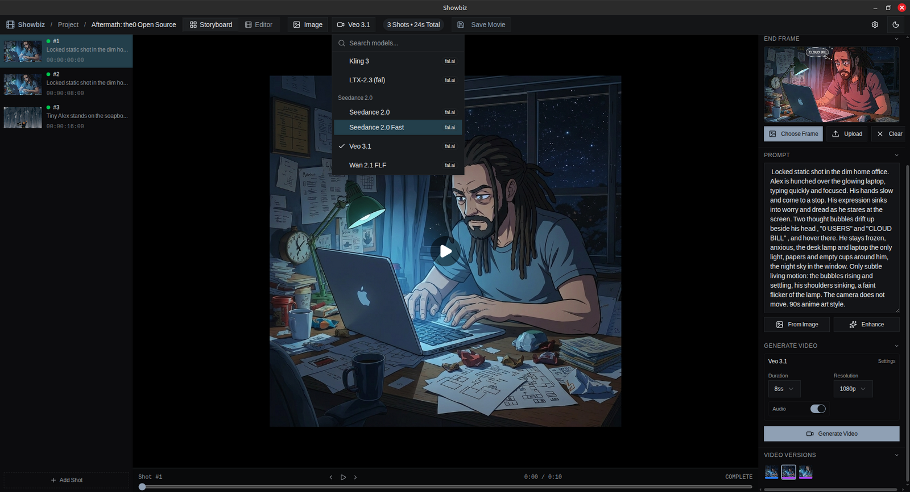
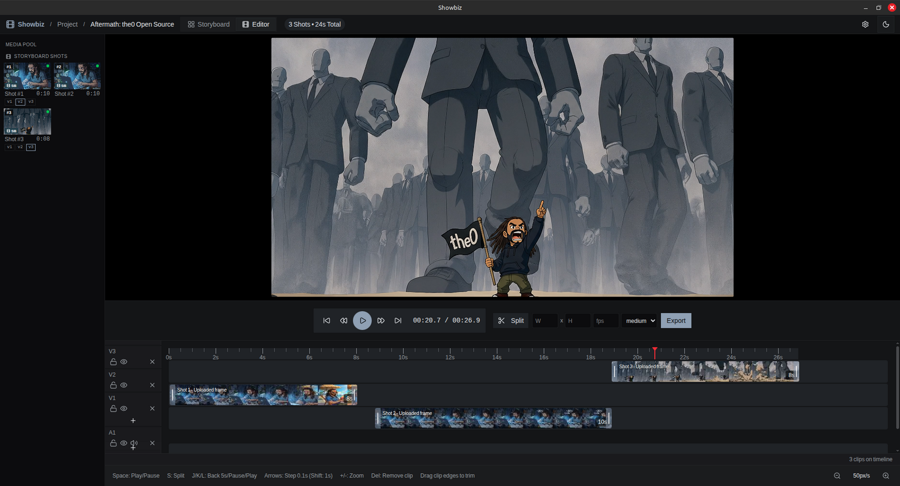

Project bible
Reusable characters, locations, props and styles. Compose consistent scene frames from them so every shot belongs to the same world.
Scene 01 · AI-powered video storyboard
Showbiz is a desktop studio for AI filmmaking. Generate images, turn them into videos, trim and arrange them on a timeline, and export a finished movie — all on your machine.

Build each shot from a start frame, an optional end frame and a prompt. Pick a model, generate.

Arrange, trim and split shots on a multi-track timeline, then export with native ffmpeg.
Scene 02 · The callsheet
Reusable characters, locations, props and styles. Compose consistent scene frames from them so every shot belongs to the same world.
Each shot has a start frame, an optional end frame and a prompt. The video model animates between the frames.
Nano Banana, GPT Image 2 and Flux, with inpainting and prompt-based edits when a frame needs surgery.
Every generation and edit creates a version. Branch, compare and switch without ever destroying a take.
Veo 3.1, Seedance 2, Kling 3, LTX-2.3 and Wan 2.1, with start/end-frame support wherever the model has it.
Multi-track arranging with trim, split and preview playback. Native ffmpeg assembles the final movie with progress reporting.
Scene 03 · The cast
Config-driven: new models land by dropping a JSON file, no code changes needed.
| Model | Provider |
|---|---|
| Nano Banana / 2 / 2 Lite / Pro | Google (Gemini) |
| GPT Image 2 | OpenAI, via fal.ai |
| Flux Dev / Flux Kontext | Black Forest Labs, via fal.ai |
| Model | Provider | End frames |
|---|---|---|
| Veo 3.1 | Google, via fal.ai | optional |
| Seedance 2.0 / 2.0 Fast | ByteDance, via fal.ai | optional |
| Kling 3 | Kuaishou, via fal.ai | no |
| LTX-2.3 | Lightricks, via fal.ai | no |
| Wan 2.1 FLF | Alibaba, via fal.ai | required |
Scene 04 · The premiere
Released __RELEASE_DATE__
Unsigned build? Run xattr -cr /Applications/Showbiz.app after install to clear Gatekeeper.
All releases and changelogs live on GitHub Releases.
Scene 05 · Q&A
~/.local/share/com.showbiz.app/ on Linux). Keys never leave your machine except to authenticate API calls.src/lib/models/providers/ and it is auto-discovered at build time, no code changes needed.